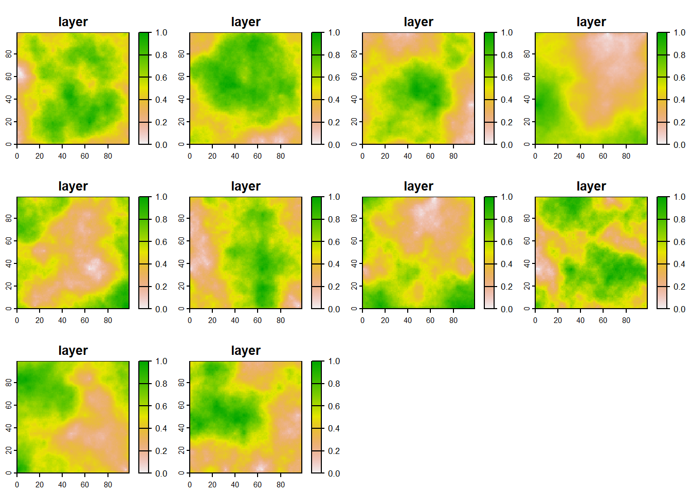
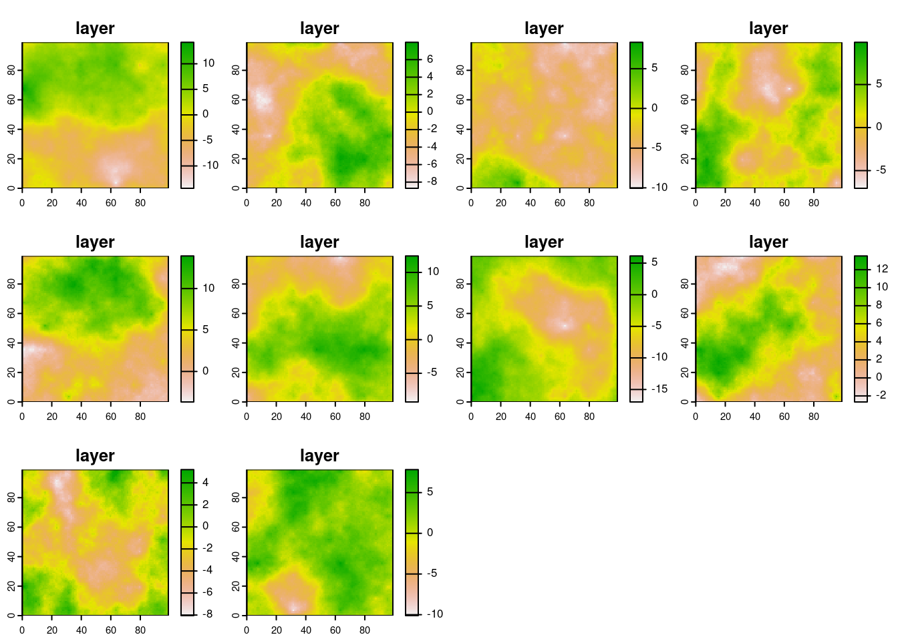
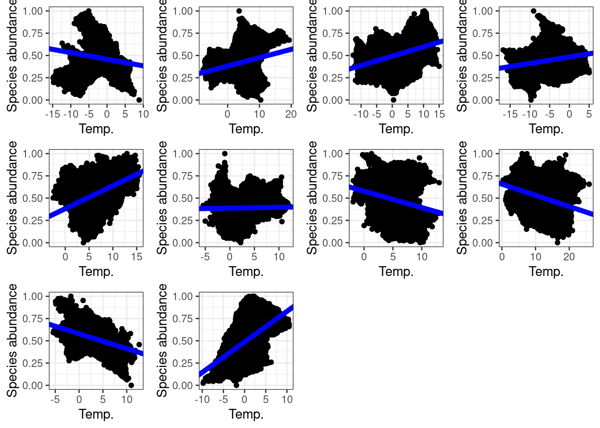

1 Introducing SpaDES with a dummy ecological model
Authors: Ceres Barros, Tati Micheletti
Let’s imagine we want to explore how the relationship between a species’ abundance and temperature changes over time. Both the abundance data and the temperature data are being constantly updated by a simulation model, and we want to analyse the relationship between the two iteratively, without needing to manually run a script to account for the newly generated data inputs.
1.1 BEFORE SpaDES…
If we use R to develop our species abundance and temperature simulation models in the ‘conventional way’, we’ll probably have i) (the worst case scenario) several scripts that run simulations and data treatment/analysis separately and have to be executed manually, or ii) a long script where everything happens - the simulations and data analysis -, iii) a main script that sources others that do the simulation and analyses.
Option i) is more common when different software are used for different parts of the process (e.g., a simulation model in C++ generates data that is then analysed in R).
Option ii) is inconvenient because very long scripts make changes and updates to the script - debugging can also be more tiresome.
Option iii), is similar to the SpaDES way of thinking.
The difference is that SpaDES defines a standard way of writing different components of a model, or of a modelling framework.
This makes changing, updating and sharing code - or modules - easier, as well as swapping and adding modules in a modelling framework.
The example below is so minimal that it is unlikely to show the full benefits of using SpaDES - the same could be accomplished with a fairly short script.
However, it introduces the different parts of a module and how to link modules.
Part 2 goes a step further and uses real datasets to project species presences across a landscape in Canada.
In Part 2, we introduce SpaDES features that we most commonly use in our work (e.g., caching and spatial data processing) and provide some coding best practices that we use ourselves (e.g., code assertions).
1.1.1 Setup
This is what you’d normally do… Install all the packages in some way that you probably didn’t record in your scripts and then start your script with loading the packages:
Code
## please start from a clean R session
remotes::install_github("ropensci/NLMR") ## you will need this ;)
library(raster)
library(quickPlot)
library(ggplot2)
library(SpaDES.tools)
library(ggpubr)And now create a raster template:
Code
r <- raster(nrows = 100, ncols = 100, xmn = -50, xmx = 50, ymn = -50, ymx = 50)1.1.2 Species abundance “simulations”
Our VERY simple “simulation” model (in form of a function) generates rasters that follow a Gaussian distribution
Code
abundance_model <- function(ras, Time) {
abund_outputs <- list()
for (t in 1:Time) {
abund_outputs[[t]] <- NLMR::nlm_mpd(
ncol = ncol(ras),
nrow = nrow(ras),
resolution = unique(res(ras)),
roughness = 0.5,
rand_dev = 100,
rescale = TRUE,
verbose = FALSE
)
}
return(abund_outputs)
}Set the length of the simulation (or simply the number of model iterations), run it and plot results (all ABUNDANCE plots together):
Code
Time <- 10
abundance <- abundance_model(ras = r, Time = Time)
dev()
plot(stack(abundance))
1.1.3 Temperature “simulations”
The temperature simulation model will be similar to the vegetation one - remember this is a dummy example.
Code
temperature_model <- function(ras, Time) {
temp_outputs <- list()
for (t in 1:Time) {
temp_outputs[[t]] <- NLMR::nlm_mpd(
ncol = ncol(ras),
nrow = nrow(ras),
resolution = unique(res(ras)),
roughness = 0.5,
rand_dev = 10,
rescale = FALSE,
verbose = FALSE
)
}
return(temp_outputs)
}Run the model and plot results (all temperature plots together)
Code
temperature <- temperature_model(ras = r, Time = Time)
plot(stack(temperature))
1.1.4 Data analysis
Now we analyse if species abundance and temperature are correlated.
First, we create the data analysis function (a simple linear model):
Code
stats_analysis <- function(Data) {
if (all(c("abund", "temp") %in% colnames(Data))) {
lm1 <- lm(abund ~ temp, data = Data)
ggplot(Data) +
geom_point(aes(x = temp, y = abund)) +
geom_abline(intercept = lm1$coefficients["(Intercept)"],
slope = lm1$coefficients["temp"], size = 2, col = "blue") +
theme_bw() +
labs(x = "Temp.", y = "Species abundance")
} else {
stop("Data must contain 'abund' and 'temp' columns")
}
}Then we create a loop to analyse each plot of our time-series:
Code
lmPlots <- list()
for (t in 1:Time) {
outputdata <- data.frame(abund = abundance[[t]][], temp = temperature[[t]][])
lmPlots[[t]] <- stats_analysis(Data = outputdata)
}
## Warning: Using `size` aesthetic for lines was deprecated in ggplot2
## 3.4.0.
## ℹ Please use `linewidth` instead.
## This warning is displayed once every 8 hours.
## Call `lifecycle::last_lifecycle_warnings()` to see where
## this warning was generated.
ggarrange(plotlist = lmPlots)
1.2 AFTER SpaDES…
1.2.1 The control script
Let us now solve the same problem using the SpaDES approach.
We start by creating an .R script (it can have any name) that sets up and runs the SpaDES model.
The control script for this example is located on the root of the SpaDES4Dummies GitHub repository under the name Part1_DummyModel.R.
Note that Markdown (.Rmd) scripts can also be used instead of `.R` scripts.
We start by making sure all SpaDES packages and their dependencies are installed (and that the installation is scripted) using the Require package.
Code
## start again from a clean R session
options(repos = c("https://predictiveecology.r-universe.dev/",
CRAN = "https://cloud.r-project.org"))
## decide where you're working
mainPath <- "~/SpaDES4Dummies_Part1"
pkgPath <- file.path(mainPath, "packages", version$platform,
paste0(version$major, ".", strsplit(version$minor, "[.]")[[1]][1]))
dir.create(pkgPath, recursive = TRUE)
.libPaths(pkgPath, include.site = FALSE) ## install packages in project library (proj-lib)
if (!"remotes" %in% installed.packages(lib.loc = pkgPath))
install.packages("remotes")
if (!"Require" %in% installed.packages(lib.loc = pkgPath) ||
packageVersion("Require", lib.loc = pkgPath) < "0.3.1") {
remotes::install_github("PredictiveEcology/Require@55ec169e654214d86be62a0e13e9a2157f1aa966",
upgrade = FALSE)
}
## use binary linux packages if on Ubuntu
Require::setLinuxBinaryRepo()
Require::Require(c("SpaDES", "DiagrammeR"), require = FALSE, upgrade = FALSE,
dependencies = TRUE, standAlone = TRUE) ## automatically downloads all packages in the SpaDES family and their dependencies
library(SpaDES)
setPaths(cachePath = file.path(mainPath, "cache"),
inputPath = file.path(mainPath, "inputs"),
modulePath = file.path(mainPath, "modules"),
outputPath = file.path(mainPath, "outputs"))
getPaths() ## check that this is what you wanted
## Let's create a self-contained module that will simulate the species' abundance for any given period of time and frequency.
if (!dir.exists(file.path(getPaths()$modulePath, "speciesAbundance"))) {
newModule(name = "speciesAbundance", path = getPaths()$modulePath)
}We then create modules using newModule.
newModule creates a module folder (speciesAbundance) inside /modules that contains both the module .R script template, as well as the documentation template (the .Rmd file).
Although we will not be discussing the .Rmd file, please bear in mind that this is a fundamental part of creating a reproducible and transparent module - check out the Guide to Reproducible Code in Ecology and Evolution from the British Ecological Society).
The documentation should contain a the description of the module, its input, parameters and outputs, and potentially a reproducible examples of how the module is executed.
newModule also created the folder /data where data necessary to the module can be put in, and the folder /tests that may contain testing scripts.
We will not be using either of them in this example.
/!\ ATTENTION /!\
newModule should only be run once, otherwise it will replace all edits and contents of the module folder with the templates - this is why it is wrapped in an if statement above.
Now go ahead, open the speciesAbundance.R script and have a look at it.
1.2.2 General module structure: speciesAbundance module
The module template contains all the essential components of a module, with examples, and may seem overwhelming at first. We’ll go through it step by step (although not necessarily following the order of the script). The module script can be divided into 4 parts:
Defining the module: this is where the module is defined, i.e., the module’s metadata (e.g. module author(s), time units, basic parameters, general inputs and outputs, etc.);
Events and event functions: these are the “actions” (or events) executed in the module (i.e. species reproduction, plotting, saving parameters) - simply put, WHAT the module does;
Scheduling events: this is how SpaDES schedules when each event is going to happen - in which order (e.g. during the simulation, when will SpaDES plot a graph) - simply put, WHEN the module does it;
Additional module functions: any additional functions needed (e.g. this is used to keep the coding of your module as clear and straightforward as possible);
The first thing to note is that the user does not need to manually run any of the code inside a module’s .R script.
The function simInit() will do so when it sets up the simulation.
We will see this see this later in detail.
1.2.2.1 Defining the module
The first section of the script defines the module’s metadata. It allows defining the module’s author, keywords, any required packages and module(s) and their versions, but also parameters (and their default values) and input objects that the module requires, and the output objects it creates.
Although this dummy module example requires no true input data, we will define the template raster `r` as an “input” in the expectsInput function, and provide a default object in .inputObjects (see below).
As for the outputs, it produces a list of abundance rasters (produced during the abundanceSim event).
So we define it as an output in thecreatesOutput function.
Note that we removed several parameters that come with the template created by the newModule function, as they are not needed for this example.
To distinguish what input and output objects are in the context of a module, a good rule of thumb is that inputs are all the sim$... objects that appear for the first time (in the module events) on the right-hand side of a <-, whereas output parameters are the sim$... objects that appear for the first time to the left-hand side of a <-.
Another way of explaining it for objects is illustrated in Fig.
1.1:
Figure 1.1: Inputs and outputs in SpaDES: Object A comes from outside of the module (e.g. from an internet URL, from data you have, or from .inputObjects), while Module Z produces object C. Both objects serve as an inputs for Module Y, which in return produce as outputs objects B and D, respectivelly from objects A and C. As Module Z uses a simple function internally to create object C, it doesn’t have any inputs, such as our dummy example.
The default input objects created by the .inputObjects function (see [.inputObjects function]) during the simInit call are exceptions to this rule.
Here is how we defined the speciesAbundance module:
Code
defineModule(sim, list(
name = "speciesAbundance",
description = "",
keywords = "",
authors = person("Me", email = "me@example.com", role = c("aut", "cre")),
childModules = character(0),
version = list(speciesAbundanceData = "1.0.0"),
timeframe = as.POSIXlt(c(NA, NA)),
timeunit = "year",
citation = list("citation.bib"),
documentation = deparse(list("README.txt", "speciesAbundance.Rmd")),
reqdPkgs = list("SpaDES.core (>=2.0.2)",
"raster", "quickPlot"),
parameters = bindrows(
#defineParameter("paramName", "paramClass", value, min, max, "parameter description"),
defineParameter("simulationTimeStep", "numeric", 1, NA, NA,
"This describes the simulation time step interval"),
defineParameter(".plotInitialTime", "numeric", 1, NA, NA,
"Describes the simulation time at which the first plot event should occur."),
defineParameter(".plotInterval", "numeric", 1, NA, NA,
"Describes the simulation time interval between plot events.")
),
inputObjects = bindrows(
# expectsInput("objectName", "objectClass", "input object description", sourceURL, ...),
expectsInput("r", objectClass = "RasterLayer", desc = "Template raster")
),
outputObjects = bindrows(
#createsOutput("objectName", "objectClass", "output object description", ...),
createsOutput("abundRasters", "list", "List of layers of species abundance at any given year")
)
))Note that the package versions that you define will depend on the ones that are installed on your computer.
So take care to change them accordingly.
The SpaDES package version suggested by the template reflects the version on your computer.
The rest of the script defines the events and their sequences for this module - remember SpaDES = Spatial Discrete Event Simulator - and the events themselves.
/!\ ATTENTION /!\
defineModule() is not intended to be run directly by the user – it is run internally during a simInit() call (see Simulation setup in a “global” script). In other words, you don’t run any part of a module’s code directly in your session; you run simInit() with that module listed in the modules argument.
1.2.2.2 Events and event functions
Module events are defined and scheduled in the doEvent.<module name> function (in this example, doEvent.speciesAbundance function; see [Scheduling events]. Since we are only interested in simulating and plotting species abundances, we removed unnecessary events from the script and kept: the initialisation (init), an abundance simulation event (SimulAbund) and a plotting event (abundPlot).
Each of these events can execute one or more functions.
Event functions (actual R functions) mustn’t be confused with event names, which are the names of the events appearing in the doEvent.<module name>.
/!\ ATTENTION /!\
Event functions take only one argument, sim (the SpaDES.core::simList object that stores all objects, modules, functions, etc., of a simulation; see ?simList) and event functions always (and only) return sim (using return(invisible(sim))).
1.2.2.2.1 Initialisation event function
The initialisation event function (here, abundanceInit) can be seen as the starting point of the module.
Unlike the init event, which must always be present, the function itself does not need to exist (see [Scheduling events]) and can have whatever name we want.
Usually, this function will does pre-simulation steps that are only need to be executed once.
In our dummy example, it creates a template raster and a storage list for our species abundance outputs (which will also be rasters).
Notice that the only argument to abundanceInit is sim, a simList object that is also its only output.
Code
abundanceInit <- function(sim) {
## create storage list of species abundance
sim$abundRasters <- list()
return(invisible(sim))
}1.2.2.2.2 Abundance simulation event function
The function abundanceSim is the core event function of this module, where species abundances are generated via the event.
Notice how instead of a for-loop, abundanceSim runs the abundance_model function (which we define separately below) and stores its outputs in the sim$abundRaster object.
Notice as well that we use time(sim) as the identifier of the list slots where outputs are stored (see ?SpaDES.core::time).
As before, the sole argument and output to this event function is the sim object.
Code
abundanceSim <- function(sim) {
## Generate species abundances - our "simulation"
sim$abundRasters[[as.character(time(sim))]] <- abundance_model(ras = sim$r)
return(invisible(sim))
}The abundanceSim function was called Event1 in the template.
1.2.2.2.3 Plotting event function
Finally, we created the abundancePlot event function to plot the species abundance rasters that are produced by the abundanceSim event function.
Again, the sole argument and output of this function is sim.
Code
abundancePlot <- function(sim) {
## plot abundances
plotTitle <- paste("Species abundance\nat time",
names(sim$abundRasters)[length(sim$abundRasters)])
abundPlot <- sim$abundRasters[[length(sim$abundRasters)]]
Plot(abundPlot,
title = plotTitle,
new = TRUE, addTo = "abundPlot")
return(invisible(sim))
}The abundancePlot function was called plotFun in the template.
1.2.2.3 Scheduling events
The order in which module events are executed is determined by the doEvent.<module name> function.
This function also defines the events themselves and what happens in them.
The switch function executes each event (here init, SimulAbund, and abundPlot) and the events schedule themselves.
Two things are of particular importance:
- The
initevent is mandatory. This is the only event whose name that cannot be changed and that cannot be removed (even if it does not execute any event functions). All othereventsare optional and can be renamed.SpaDESsearches and executes all modules’initevents automatically. Note that the names of event functions executed duringinitcan have any name: here we changed theInitfunction name (suggested by the template) toabundanceInit. - Events should only schedule themselves. The only exception is the
init, which schedules the first time all other events are executed (even if a particular event only occurs once at the end of the simulation).
It is usually easier to fill the doEvent.<module name> function after having defined the event functions (as we did above).
For instance, we know that plotting should occur after the generation of species abundances, and so the abundPlot will be scheduled to occur after the SimulAbund event, by changing event priority (see ?priority).
This is how we configured our doEvent.speciesAbundance function:
Code
doEvent.speciesAbundance = function(sim, eventTime, eventType, debug = FALSE) {
switch(
eventType,
init = {
## do stuff for this event
sim <- abundanceInit(sim)
## schedule future event(s)
sim <- scheduleEvent(sim, eventTime = start(sim), moduleName = "speciesAbundance",
eventType = "SimulAbund")
sim <- scheduleEvent(sim, eventTime = P(sim)$.plotInitialTime,
moduleName = "speciesAbundance", eventType = "abundPlot",
eventPriority = .normal()+0.5)
},
SimulAbund = {
## do stuff for this event
sim <- abundanceSim(sim)
## schedule future event(s)
sim <- scheduleEvent(sim, eventTime = time(sim) + P(sim)$simulationTimeStep,
moduleName = "speciesAbundance", eventType = "SimulAbund")
},
abundPlot = {
## do stuff for this event
sim <- abundancePlot(sim)
## schedule future event(s)
sim <- scheduleEvent(sim, eventTime = time(sim) + P(sim)$.plotInterval,
moduleName = "speciesAbundance", eventType = "abundPlot",
eventPriority = .normal()+0.5)
},
warning(paste("Undefined event type: '", current(sim)[1, "eventType", with = FALSE],
"' in module '", current(sim)[1, "moduleName", with = FALSE], "'", sep = ""))
)
return(invisible(sim))
}We suggest having a look at ?base::switch too fully understand its behaviour.
In short, base::switch tells R to execute (or switch) different code depending on the value of EXPR (here eventType).
Here, this means that the behaviour of the function doEvent.speciesAbundance will change depending on the present eventType.
So we need to define what behaviour it should have for each event type defined in the module - namely, which functions will be executed and whether to schedule future events with scheduleEvent.
1.2.2.3.1 init
The first event is, obviously, init - again its name cannot be changed.
In init we run the initialisation event function (abundanceInit) - optional - and schedule the first occurrence of all other events (here, the abundance simulation, SimulAbund, and plotting, abundPlot, events).
Because the init is the only event that SpaDES always executes at the start of the simulation, if no events are scheduled during init, no events will be executed after the init.
Notice two things:
- The
SimulAbundevent is scheduled atstart(sim)(i.e. at the first time step of the simulation), which means that it will run after theinitevent, but still in the same “year”. initschedules the first plotting event to be executed at the time defined by the.plotInitialTimeparameter, which is stored in thesimobject (and obtained usingSpaDES.core::P(sim)), but with a slightly lower event priorityeventPriority = .normal()+0.5(see?priority).
1.2.2.3.2 SimulAbund
The SimulAbund event is defined next.
This event used to be called event1 in the template, and we changed its name to be more informative of what it does.
It is the core event of this module, where species abundances are generated via the event function abundanceSim.
The even also schedules itself to occur at a frequency defined by the simulationTimeStep parameter
1.2.2.3.3 abundPlot
Finally, we schedule the plotting event, abundPlot (which used to be called plot in the template).
Similarly to the SimulAbund event, it executes an event function (abundancePlot) and reschedules itself.
An important difference is that it uses the .plotInterval parameter, instead of simulationTimeStep, when rescheduling itself.
This way, future events will occur depending on the time step and plot interval parameters defined in the global script (or their default values defined in the metadata section).
1.2.2.4 .inputObjects function
The end of the template .R script defines a function called .inputObjects.
This is where the developer should include code to provide the defaults for any input objects required by the module.
This is the ideal place to produce the template raster, r , instead of doing so in abundanceInit.
This will allow a future user (or module) to provide their own r object (e.g. for another study area).
If on the other hand we don’t do this and create r during the init event, any r supplied by the user will be overridden by the execution of init.
As a rule of thumb, default inputs should be created in a way that allows their values to be overridden by the user (by supplying a named list of objects via simInit(objects = ...)) or by any other modules that produce these objects.
For this, we rely on the SpaDES.core::suppliedElsewhere function, which detects if a given object has already been supplied by the user or if it will be supplied by another module.
Note that suppliedElsewhere does not know whether the module that supplies the object will be executed before the present module, as it is blind to module scheduling order.
When modules are relatively simple and have an approximately linear flow of interdependencies, SpaDES is usually able to tell the order in which modules need to be executed.
In more complex cases it is a good idea to pass a vector of module names to simInit(loadOrder = ...) definining the order of module execution.
Here’s an example of how to do this (the commented instructions have been deleted):
Code
.inputObjects <- function(sim) {
if (!suppliedElsewhere("r")) {
## make template raster if not supplied elsewhere.
sim$r <- raster(nrows = 100, ncols = 100, xmn = -50, xmx = 50, ymn = -50, ymx = 50)
}
return(invisible(sim))
}If we choose to supply the default r in .inputObjects, then we need to remove its creation from the abundanceInit function and add r to the metadata as an input.
We have done this, so that abundanceInit only creates a storage list for the outputs:
Code
abundanceInit <- function(sim) {
## create storage list of species abundance
sim$abundRasters <- list()
return(invisible(sim))
}It is good practice to provide default input objects to all remaining modules, so that they can work stand-alone. We have done this below.
/!\ ATTENTION /!\
If r becomes an input with defaults it must be added to the module metadata inside an expectsInput call.
1.2.2.5 Additional module functions
Events can also rely on other functions that can either be sourced from other scripts, or defined at the end of the module script (e.g. usually before .inputObjects, although the order is irrelevant).
This is the case for the species abundances generator function, which we coded in a separate script called abundance_model.R.
Scripts with accessory functions like these go into module’s R/ folder.
Functions should also be accompanied by metadata.
Here we provide a description of the function, its parameters, returning value and what other package functions it relies on using the roxygen2 documentation style (indicated by #').
Code
#' Accessory function to speciesAbundance module
#'
#' @param ras a raster layer used as template.
#' @return a fake abundance raster generated as a Gaussian map with scale = 100 and variance = 0.01
#' @import NLMR nlm_mpd
abundance_model <- function(ras) {
# abund_ras <- gaussMap(ras, scale = 100, var = 0.01) ## RandomFields no longer available
abund_ras <- NLMR::nlm_mpd(
ncol = ncol(ras),
nrow = nrow(ras),
resolution = unique(res(ras)),
roughness = 0.5,
rand_dev = 100,
rescale = TRUE,
verbose = FALSE
)
return(abund_ras)
}1.2.3 Creating and adding additional modules: the temperature module
The order in which modules are first executed (i.e. their init events) can be automatically determined by inter-module dependencies (i.e. module inputs that are the outputs of other modules).
If there are no inter-module dependencies this order is determined by the order in which the modules are listed in the Part1_DummyModel.R script, or via the simInit(loadOrder = ...) argument.
After the init event, the module execution order follows the order of events.
This means that a module’s events can be scheduled before and after another module’s events within the same simulation time step.
However, keep in mind that this can make the simulation flow hard to follow, debug and change when additional modules are added.
The second module we created generates yearly temperatures.
Apart from different objects and functions names, this module also has the template raster r as required input object.
Recall that r is created during the .inputObjects of the speciesAbundance module.
When the two modules are linked, this object will not be created twice because suppliedElsewhere("r") will tell the temperature module that `r` will be supplied by another module.
This may appear trivial in this example, but it can be extremely useful when inuts are heavy objects that require lengthy computations to be produces.
This is how we set up the temperature.R script looks like:
Code
# Everything in this file gets sourced during simInit, and all functions and objects
# are put into the simList.
defineModule(sim, list(
name = "temperature",
description = "Temperature simulator",
keywords = c("temperature", "gaussian", "spatial"),
authors = structure(list(list(given = c("Ceres"), family = "Barros",
role = c("aut", "cre"), email = "ceres.barros@ubc.ca", comment = NULL)), class = "person"),
childModules = character(0),
version = list(temperature = "1.0.0"),
timeframe = as.POSIXlt(c(NA, NA)),
timeunit = "year",
citation = list("citation.bib"),
documentation = list("README.txt", "temperature.Rmd"),
reqdPkgs = list("SpaDES.core (>=2.0.2)",
"raster", "achubaty/NLMR"),
parameters = bindrows(
#defineParameter("paramName", "paramClass", value, min, max, "parameter description"),
defineParameter("simulationTimeStep", "numeric", 1, NA, NA,
"This describes the simulation time step interval"),
defineParameter(".plotInitialTime", "numeric", 1, NA, NA,
"This describes the simulation time at which the first plot event should occur"),
defineParameter(".plotInterval", "numeric", 1, NA, NA,
"This describes the simulation time interval between plot events")
),
inputObjects = bindrows(
#expectsInput("objectName", "objectClass", "input object description", sourceURL, ...),
expectsInput("r", "RasterLayer", "Template raster")
),
outputObjects = bindrows(
#createsOutput("objectName", "objectClass", "output object description", ...),
createsOutput("tempRasters", "list", "List of raster layers of temperature at any given year")
)
))
## event types
# - type `init` is required for initialiazation
doEvent.temperature = function(sim, eventTime, eventType, debug = FALSE) {
switch(
eventType,
init = {
## do stuff for this event
sim <- Init(sim)
## schedule future event(s)
sim <- scheduleEvent(sim, eventTime = start(sim), moduleName = "temperature", eventType = "SimulTemp")
sim <- scheduleEvent(sim, eventTime = P(sim)$.plotInitialTime, moduleName = "temperature",
eventType = "tempPlot", eventPriority = .normal() + 0.5)
},
SimulTemp = {
## do stuff for this event
sim <- update(sim)
## schedule future event(s)
sim <- scheduleEvent(sim, eventTime = time(sim) + P(sim)$simulationTimeStep, moduleName = "temperature",
eventType = "SimulTemp")
},
tempPlot = {
## do stuff for this event
sim <- plotting(sim)
## schedule future event(s)
sim <- scheduleEvent(sim, eventTime = time(sim) + P(sim)$.plotInterval, moduleName = "temperature",
eventType = "tempPlot", eventPriority = .normal() + 0.5)
},
warning(paste("Undefined event type: '", current(sim)[1, "eventType", with = FALSE],
"' in module '", current(sim)[1, "moduleName", with = FALSE], "'", sep = ""))
)
return(invisible(sim))
}
## This is the 'init' event:
Init <- function(sim) {
## create storage list of species temperature
sim$tempRasters <- list()
return(invisible(sim))
}
## This is the temperature simulation event function
update <- function(sim) {
## Generate temperature - our "updated data"
sim$tempRasters[[as.character(time(sim))]] <- temperature_model(ras = sim$r)
return(invisible(sim))
}
## This is the plotting event funciton
plotting <- function(sim) {
## plot temperature
plotTitle <- paste("Temperature\nat time",
names(sim$tempRasters)[length(sim$tempRasters)])
tempPlot <- sim$tempRasters[[length(sim$tempRasters)]]
Plot(tempPlot,
title = plotTitle,
new = TRUE, addTo = "tempPlot")
return(invisible(sim))
}
.inputObjects <- function(sim) {
if (!suppliedElsewhere("r")) {
## make template raster if not supplied elsewhere.
sim$r <- raster(nrows = 100, ncols = 100, xmn = -50, xmx = 50, ymn = -50, ymx = 50)
}
return(invisible(sim))
}Again, we added an accessory temperature_model function in a separate script R/temperature_model.R:
Code
#' Accessory function to temperature module
#'
#' @param ras a raster layer used as template.
#' @return a fake temperature raster generated as a Gaussian map with scale = 100 and variance = 0.01
#' @import NLMR nlm_mpd
temperature_model <- function(ras) {
# temp_ras <- gaussMap(ras, scale = 100, var = 0.01) ## RandomFields no longer available
temp_ras <- NLMR::nlm_mpd(
ncol = ncol(ras),
nrow = nrow(ras),
resolution = unique(res(ras)),
roughness = 0.5,
rand_dev = 10,
rescale = FALSE,
verbose = FALSE
)
return(temp_ras)
}1.2.4 Modules that depend on other modules: the speciesTempLM module
Our third and last module, speciesTempLM, will be used to run the statistical analysis at each year, after the abundances and temperatures are generated (species and Temperature Linear Model). Hence, it will depend on the outputs of the speciesAbundance and the temperature modules.
The interest of keeping the statistical analysis in a separate module lies on the fact that it allows us to easily swap and compare different statistical models to analyse our data if we want to.
It also allows for greater flexibility when it comes to when the statistical model is supposed to run. For example, we may want to fit it at every 5 years, instead of every year, using the previous 5 years of data. By having the statistical analysis contained in its own module, we don’t need to change other module scripts in order to make these changes.
Finally, we draw your attention to a few differences in this module’s script before we see it:
The frequency of the statistical analysis (and correspondent plots) will be determined by the parameter
statsTimestep. This parameter also determines the number of data years to be used to fit the linear model. IfstatsTimestep = 5, the statistical analysis will use the precedent 5 years of data including the year in which the event is running (a total of 6 years of data);This module requires inputs that have no defaults in
.inputObjects. They are specified ininputObjectspart ofdefineModule- notice how we’ve respected the names, classes and description of the objects that come from the speciesAbundance and the temperature modules;We have two additional functions in a separate script (
R/linear_model_functions.R): the function fitting the linear model and a plotting function.
Below is the full module script.
Notice how the future events where scheduled to P(sim)$statsTimestep + 0.1, to force the statistical analyses to occur after the abundance and temperature rasters are ready.
Code
# Everything in this file gets sourced during simInit, and all functions and objects
# are put into the simList.
defineModule(sim, list(
name = "speciesTempLM",
description = "Statistical analysis of species ~ temperature relationships using LM",
keywords = c("linear model"),
authors = structure(list(list(given = c("Ceres"), family = "Barros",
role = c("aut", "cre"), email = "ceres.barros@ubc.ca", comment = NULL)), class = "person"),
childModules = character(0),
version = list(speciesTempLM = "1.0.0"),
timeframe = as.POSIXlt(c(NA, NA)),
timeunit = "year",
citation = list("citation.bib"),
documentation = list("README.txt", "speciesTempLM.Rmd"),
reqdPkgs = list("SpaDES.core (>=2.0.2)",
"raster", "ggplot2", "data.table", "reshape2"),
parameters = bindrows(
#defineParameter("paramName", "paramClass", value, min, max, "parameter description"),
defineParameter("statsTimestep", "numeric", 1, NA, NA, "This describes the how often the statitiscal analysis will be done")
),
inputObjects = bindrows(
#expectsInput("objectName", "objectClass", "input object description", sourceURL, ...),
expectsInput("abundRasters", "list", "List of raster layers of species abundance at any given year"),
expectsInput("tempRasters", "list", "List of raster layers of temperature at any given year")
),
outputObjects = bindrows(
#createsOutput("objectName", "objectClass", "output object description", ...),
createsOutput("outputdata", "list", "List of dataframes containing species abundances and temperature values per pixel"),
createsOutput("outputLM", "list", "List of output yearly LMs (abundance ~ temperature)"),
createsOutput("yrs", "numeric", "Vector of years used for statistical analysis")
)
))
## event types
# - type `init` is required for initialiazation
doEvent.speciesTempLM = function(sim, eventTime, eventType, debug = FALSE) {
switch(
eventType,
init = {
## do stuff for this event
sim <- statsInit(sim)
## schedule future event(s)
sim <- scheduleEvent(sim, P(sim)$statsTimestep, "speciesTempLM",
"stats", eventPriority = .normal() + 2)
sim <- scheduleEvent(sim, P(sim)$statsTimestep, "speciesTempLM",
"statsPlot", eventPriority = .normal() + 2.5)
},
stats = {
## do stuff for this event
sim <- statsAnalysis(sim)
## schedule future event(s)
sim <- scheduleEvent(sim, time(sim) + P(sim)$statsTimestep, "speciesTempLM",
"stats", eventPriority = .normal() + 2)
},
statsPlot = {
## do stuff for this event
sim <- statsPlot(sim)
## schedule future event(s)
sim <- scheduleEvent(sim, time(sim) + P(sim)$statsTimestep, "speciesTempLM",
"statsPlot", eventPriority = .normal() + 2.5)
},
warning(paste("Undefined event type: '", current(sim)[1, "eventType", with = FALSE],
"' in module '", current(sim)[1, "moduleName", with = FALSE], "'", sep = ""))
)
return(invisible(sim))
}
## template initialization
statsInit <- function(sim) {
## create outputs storage lists
sim$outputLM <- list()
return(invisible(sim))
}
## Statistical analysis event
statsAnalysis <- function(sim) {
## get all species abundances data available
abundData <- data.table(getValues(stack(sim$abundRasters)))
abundData[, pixID := 1:nrow(abundData)]
abundData <- melt.data.table(abundData, id.var = "pixID",
variable.name = "year", value.name = "abund")
abundData[, year := as.numeric(sub("X", "", year))]
## get all temperature data available
tempData <- data.table(getValues(stack(sim$tempRasters)))
tempData[, pixID := 1:nrow(tempData)]
tempData <- melt.data.table(tempData, id.var = "pixID",
variable.name = "year", value.name = "temp")
tempData[, year := as.numeric(sub("X", "", year))]
## merge per year
setkey(abundData, pixID, year)
setkey(tempData, pixID, year)
sim$outputdata <- abundData[tempData]
sim$outputLM[[as.character(time(sim))]] <- linearModel(Data = sim$outputdata)
return(invisible(sim))
}
## Plotting event
statsPlot <- function(sim) {
model <- sim$outputLM[[as.character(time(sim))]]
modelPlot <- ggplot(sim$outputdata) +
geom_point(aes(x = temp, y = abund)) +
geom_abline(intercept = model$coefficients["(Intercept)"],
slope = model$coefficients["temp"], size = 2, col = "blue") +
theme_bw() +
labs(x = "Temp.", y = "Species abundance")
plotTitle <- paste("abundance ~ temperature\n",
"years", range(sim$outputdata$year)[1],
"to", range(sim$outputdata$year)[2])
Plot(modelPlot,
title = plotTitle,
new = TRUE, addTo = "modelPlot")
return(invisible(sim))
}
.inputObjects <- function(sim) {
# Any code written here will be run during the simInit for the purpose of creating
# any objects required by this module and identified in the inputObjects element of defineModule.
# This is useful if there is something required before simulation to produce the module
# object dependencies, including such things as downloading default datasets, e.g.,
# downloadData("LCC2005", modulePath(sim)).
# Nothing should be created here that does not create a named object in inputObjects.
# Any other initiation procedures should be put in "init" eventType of the doEvent function.
# Note: the module developer can check if an object is 'suppliedElsewhere' to
# selectively skip unnecessary steps because the user has provided those inputObjects in the
# simInit call, or another module will supply or has supplied it. e.g.,
# if (!suppliedElsewhere('defaultColor', sim)) {
# sim$map <- Cache(prepInputs, extractURL('map')) # download, extract, load file from url in sourceURL
# }
#cacheTags <- c(currentModule(sim), "function:.inputObjects") ## uncomment this if Cache is being used
dPath <- asPath(getOption("reproducible.destinationPath", dataPath(sim)), 1)
message(currentModule(sim), ": using dataPath '", dPath, "'.")
# ! ----- EDIT BELOW ----- ! #
# ! ----- STOP EDITING ----- ! #
return(invisible(sim))
}And the script with the accessory functions:
Code
## Accessory functions to speciesTempLM module
#' Accessory function to speciesTempLM module that calculates a
#' linear regression between species abundances and temperature
#'
#' @param Data a data.frame or data.table that contains an \code{abund}
#' column and a \code{temp} column with abundance and temperature values
#' in each location, respectively.
#' @return a linear model (\code{lm}) object fitted with the formula:
#' \code{abund ~ temp}
linearModel <- function(Data){
lm1 <- lm(abund ~ temp, data = Data)
return(lm1)
}1.2.5 Simulation
1.2.5.1 Simulation setup in a “global” script
We can now go back to our Part1_DummyModel.R script and set the simulation up.
The function simInit needs a few arguments listing simulation folder directories, parameters, simulation times, modules and, optionally, input objects supplied by the user.
simInit will prepare a simulation object that can later be run by the spades function:
The first list,
modules, contains modules we want to activate.timesis a named list containing the start and end times of the simulation and what time units we’re working with (with “start” and “end” being the listnames. It thus defines the length of the simulation. It is important that the start and ending times are defined in decimals, becauseSpaDESallows decomposing time units into smaller fractions.parametersis a named list of named lists, containing parameters values passed to each module. Note that because the module metadata will (or should) contain default parameter values, here we pass only parameters which we want to change with respect to their defaults. For instance,.plotIntervalis used and defined in the speciesAbundance and temperature modules, but not passed to thesimInitfunction because we want to use the default value. As a developer providing a reproducible example, we may also chose to list important and useful parameters, even if the value is the same as the default. Here we chose to list.plotInitialTime(a parameter used and defined in the speciesAbundance and temperature modules), but provide the default value (we experimenting with it by changing its value in thePart1_DummyModel.R).pathscontains the folder directory paths that we set earlier.
Code
## list the modules to use
simModules <- list("speciesAbundance", "temperature", "speciesTempLM")
## Set simulation and module parameters
simTimes <- list(start = 1, end = 10, timeunit = "year")
simParams <- list(
speciesAbundance = list(simulationTimeStep = 1,
.plotInitialTime = 1),
temperature = list(simulationTimeStep = 1,
.plotInitialTime = 1),
speciesTempLM = list(statsTimestep = 5)
)
## make a list of directory paths
simPaths <- getPaths()
## Simulation setup
mySim <- simInit(times = simTimes, params = simParams,
modules = simModules, paths = simPaths)Finally, we highlight that simInit also executes all .inputObjects functions, and schedules the init events, but does not execute them:
Code
events(mySim)1.2.5.2 Checking the simulation setup
Before starting the simulations we should check if the modules were linked correctly.
Module diagram
moduleDiagram (Fig. 1.2) is a useful function that shows module inter-dependencies as a network diagram.
The direction of the arrows indicates an output to input flow.
You can see that speciesAbundance and temperature inputs (specifically our `r` raster) are supplied by an external source (INPUT) - the user or .inputObjects.
Whereas the inputs to the speciesTempLM module are outputs of the speciesAbundance and temperature modules.
Code
moduleDiagram(mySim)Figure 1.2: Diagram of module connections.
Object diagram
objectDiagram (Fig. 1.3) provides another way of checking module linkages.
It explicitly shows module inter-dependencies by depicting the objects that establish links between modules.
Code
objectDiagram(mySim)Figure 1.3: Module diagram showing module inter-dependencies with object names.
1.2.5.3 Running SpaDES
We run the simulation using the spades function, which takes the output of the simInit, executes the already scheduled init events, which schedule the remainder of the events.
We passed debug = TRUE so that spades prints the events as they are being executed.
In case something fails, this helps diagnosing where the issue occurred.
Code
## run simulation
dev() # on Windows and Mac, this opens external device if using Rstudio, it is faster
clearPlot()
mySim2 <- spades(mySim, debug = TRUE)Figure 1.4: Simulation plots: Final plot of the simulation
We suggest experimenting with changing parameter values and trying to create and add other modules to further explore all the SpaDES flexibility.
The more complex the project gets, the more advantageous it is to use SpaDES to turn modules on or off, swapping modules to run, e.g., different statistical analyses, or to include different data.
1.2.6 Additional notes
SpaDES is an extremely powerful package, whose potential goes well beyond what has been discussed in this dummy example.
If you want to explore it further, we recommend following Part 2 for a more realistic (but still simple) SpaDES application.
Also, do go to the SpaDES webpage to find further information about the platform, as well as upcoming workshops and publications and to the Predictive Ecology Github repository to see all the SpaDES modules and SpaDES-related packages that we maintain at the Predictive Ecology Lab.
Happy SpaDESing!